Experience
Earth Champions Programme


Throwback to 2022, I was selected as one of 42 fellows nationwide from around 900 applicants (4.5% acceptance rate) for the Earth Champions Program (ECP) 2022 by the Bangladesh Youth Environmental Initiative (BYEI), a fully funded (~100,000 BDT) environmental leadership program supported by the U.S. and French Embassies. As part of the fellowship, we participated in a week-long residential Earth Camp in Sylhet and completed a year-long training curriculum focused on environmental policies, climate change, and sustainable development.
Through this program, we gained hands-on experience in environmental analysis, policy discussions, and collaborative learning, while being featured in national media. The fellowship provided valuable insights into environmental leadership and connected me with a network of emerging environmental leaders across Bangladesh.
Transcom Visit
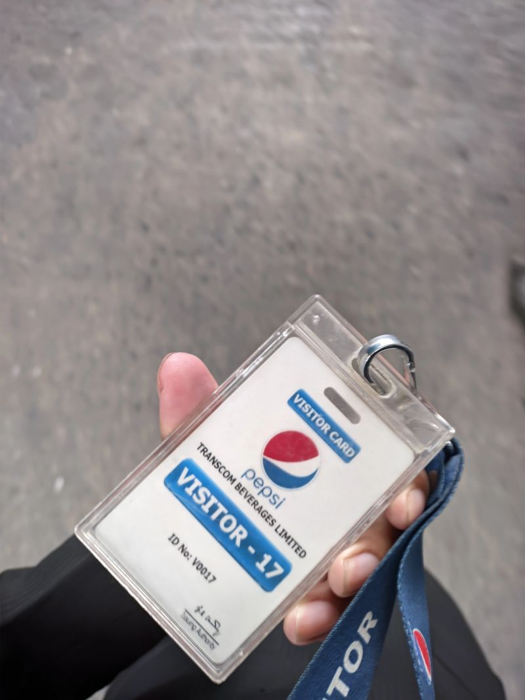
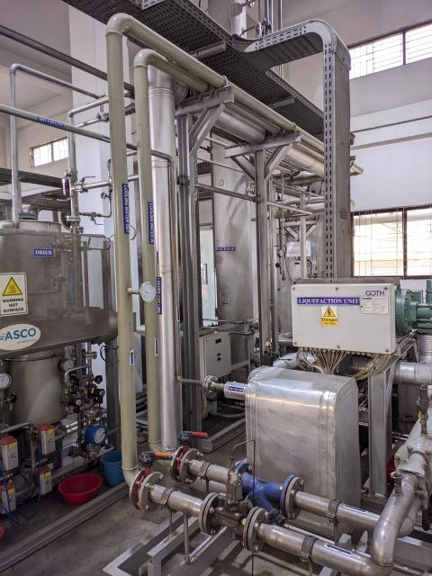
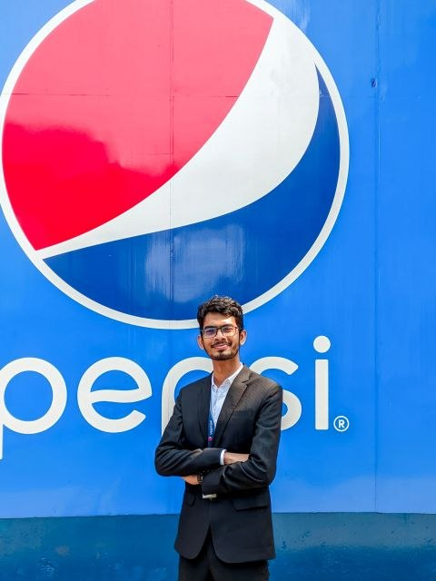
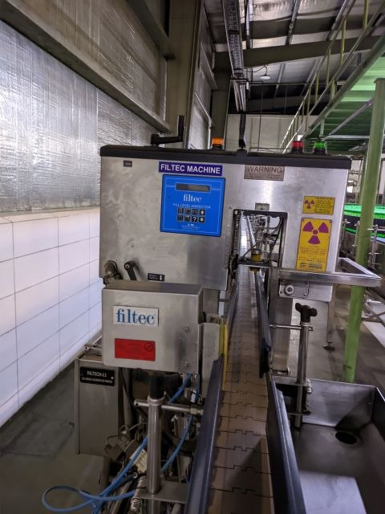
A visit to Transcom Beverages Limited (Bagher Bazar Plant). My journey began with a guided tour through the production lines. I saw how bottles were created and filled. There was a filtec machine which separates the less filled bottle from the line.
Then I visited the CO2 production place where they were extracting CO2 from diesel. There was a large tank to store the CO2. Then I explored the power sector of the facility. There were 2 generators with power of 3 megawatts and another generator in progress which will have 2 megawatts alone. There were many UPSs which can give power to the whole facility for about 15 minutes. In the meantime, generators can be turned on.
Then I visited the water filtering plant which filters water in various processes. Finally, I talked with the people in the quality assurance, product management, and engineering management departments to have a clearer idea in every aspect.
EMK Physics Talk
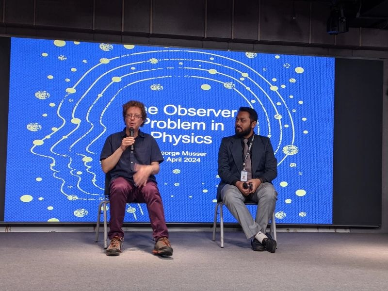
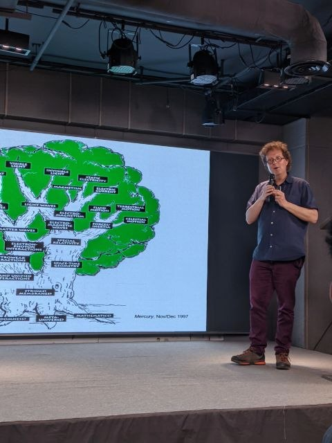
Back in 2024, I was fortunate enough to attend an intellectually stimulating workshop by renowned science writer George Musser. The EMK Center hosted this fascinating event on the observer problem in physics. His presentation provided deep insights into how observation shapes our understanding of the universe. He explored complex concepts ranging from quantum entanglement to the true nature of reality. The entire discussion left us pondering the very fabric of existence.
BIM Conference Attendance
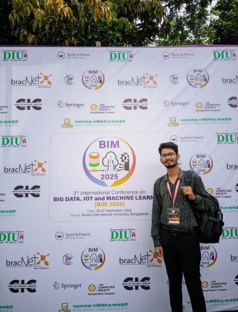
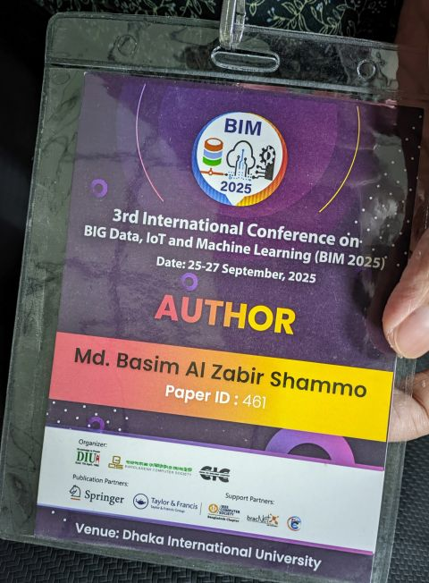
Presented our research, "Machine Learning-based Hepatitis C Detection using Ensemble Boosting," at the 3rd International Conference on Big Data IoT Machine Learning (BIM 2025).
It was an honor to discuss the findings, including the effectiveness of ensemble methods in handling medical datasets and the practical implications for diagnostics.
A big thank you to the conference organizers and attendees for the engaging discussions and valuable feedback.
External Science Fairs Attendence
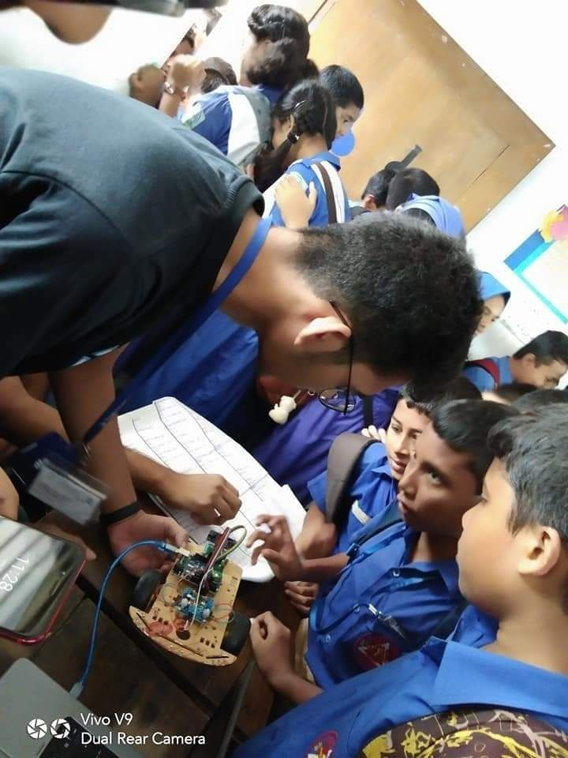
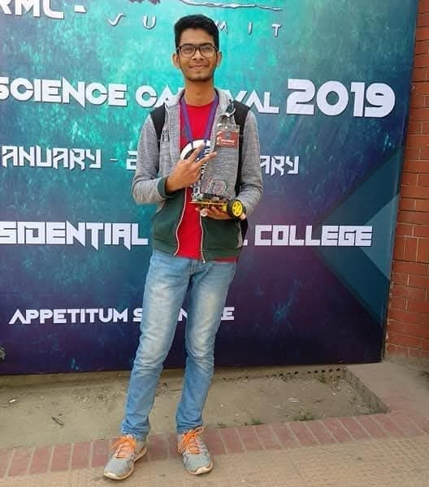
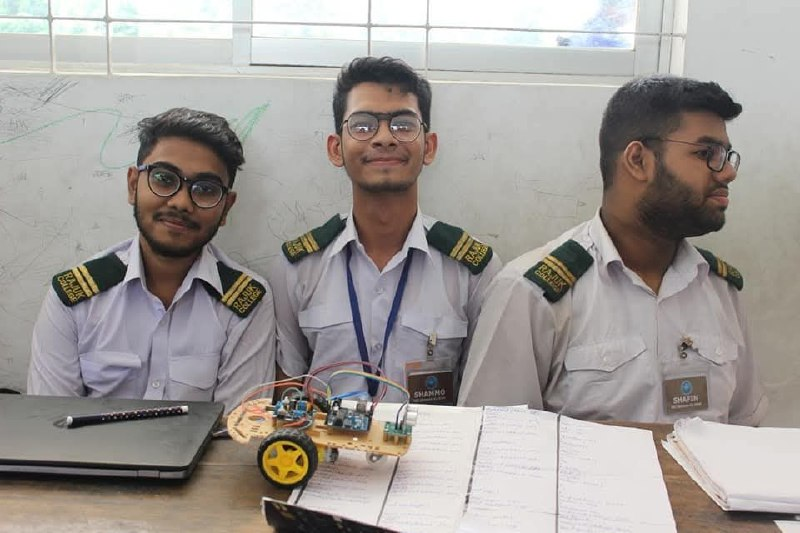
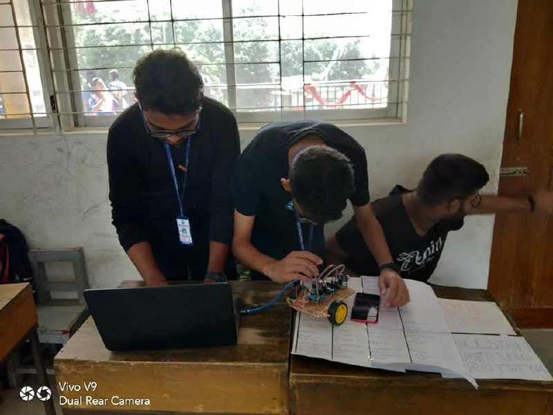
I participated in the DRMC Science Carnival 2019 and the 1st BAFSC Science Carnival 2019. I showcased my Collision Avoiding Robot at each of the fairs to the teachers and students of Dhaka Residential Model School and College and BAF Shaheen School and College, Dhaka.
During these exhibitions, I actively exchanged views and ideas with the evaluators and the spectators, receiving valuable feedback on the mechanics and future potential of my project.